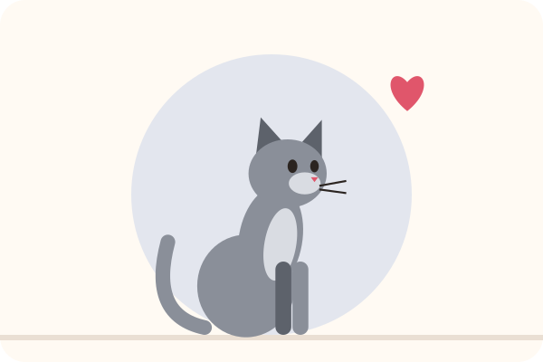

Il gatto miagola di notte: perché e come tornare a dormire
Sono le 4 del mattino e il tuo gatto miagola davanti alla porta, salta sul letto o corre nel corridoio. È sfiancante, ma raramente è un capriccio. Il gatto è naturalmente attivo all'alba e al tramonto. La buona notizia: adattando la sua giornata, spesso si ritrovano notti tranquille.
Perché il gatto miagola di notte
- Il suo ritmo naturale: il gatto è un cacciatore attivo soprattutto all'alba e al tramonto. Un gatto che ha dormito tutto il giorno ha energia da vendere al mattino presto.
- La fame: se l'ultimo pasto è lontano, ti sveglia per chiedere cibo. E se miagolando ha già ottenuto la ciotola, ricomincia.
- La noia: un gatto d'appartamento solo tutto il giorno spesso non gioca e non si stimola abbastanza.
- La ricerca di attenzione: se rispondi (anche per sgridarlo), impara che miagolare funziona.
- Il calore: una gatta non sterilizzata in calore miagola forte e molto, spesso di notte. Anche un maschio non castrato può miagolare se sente una femmina.
- L'età e la salute: in un gatto anziano, miagolii notturni nuovi possono derivare da problemi di vista o di udito, ipertiroidismo, ipertensione o declino cognitivo. Consulta il veterinario.
Soluzione 1: una vera sessione di gioco la sera
È la misura più efficace. Subito prima di andare a letto, offrigli 10-15 minuti di gioco che imita la caccia: una canna con piume che si nasconde, scappa e si lascia prendere. Termina sempre con una cattura riuscita, poi passa al pasto: cacciare, mangiare, lavarsi e dormire è il ciclo naturale del gatto.
Soluzione 2: rivedere l'orario dei pasti
Dagli una parte della razione subito dopo la sessione di gioco serale. Per il mattino presto, un distributore di crocchette programmabile è molto utile: è lui a servire il pasto, non tu. Il gatto smette pian piano di svegliarti, perché non sei più tu a portargli il cibo.
Mantieni la sua razione giornaliera abituale, solo ripartita diversamente.
Soluzione 3: tenerlo occupato durante il giorno
- Diverse brevi sessioni di gioco durante il giorno, quando possibile.
- Giochi distributori di crocchette o giochi di intelligenza per cercare parte della razione.
- Un albero tiragraffi vicino a una finestra per osservare l'esterno.
- Fai ruotare i giochi: la novità lo interessa di più.
Cerca le sue crocchette: una vera attività mentre sei via.
Soluzione 4: non premiare i miagolii
È la parte più difficile: quando miagola di notte per chiedere qualcosa, non rispondere. Niente ciotola, niente carezze, niente parole. Se è in buona salute e ha tutto ciò che gli serve, imparerà che di notte non succede nulla. Attenzione: all'inizio i miagolii spesso aumentano prima di diminuire. È normale, ed è il momento di tenere duro. Premialo invece al mattino, quando è calmo.
Se chiudi la porta della camera, lasciagli tutto ciò che gli serve dall'altra parte: acqua, lettiera, una cuccia comoda e dei giochi.
Il calore: parlane con il veterinario
Se la tua gatta non è sterilizzata, i calori possono tornare molto spesso, con miagolii intensi. La sterilizzazione in genere risolve il problema e ha anche vantaggi per la salute. Il veterinario ti consiglierà il momento giusto.
Per saperne di più: gatto che fa pipì fuori dalla lettiera · quale lettiera scegliere? · l'età del gatto in anni umani · la guida completa al gatto.
Leggi anche

Il gatto fa pipì fuori dalla lettiera: cause e soluzioni
Salute, cassetta, lettiera, stress o marcatura: capire perché il gatto fa pipì altrove, poi aiutarlo a tornare alla lettiera.
Quale lettiera scegliere per il gatto? Il confronto
Agglomerante, vegetale, silicio o minerale: vantaggi, limiti e come cambiare lettiera senza disturbare il gatto.

Quale tiragraffi scegliere per il gatto? La guida all'acquisto
I 5 tipi di tiragraffi a confronto e i 4 criteri che fanno sì che un gatto lo usi… o lo ignori.